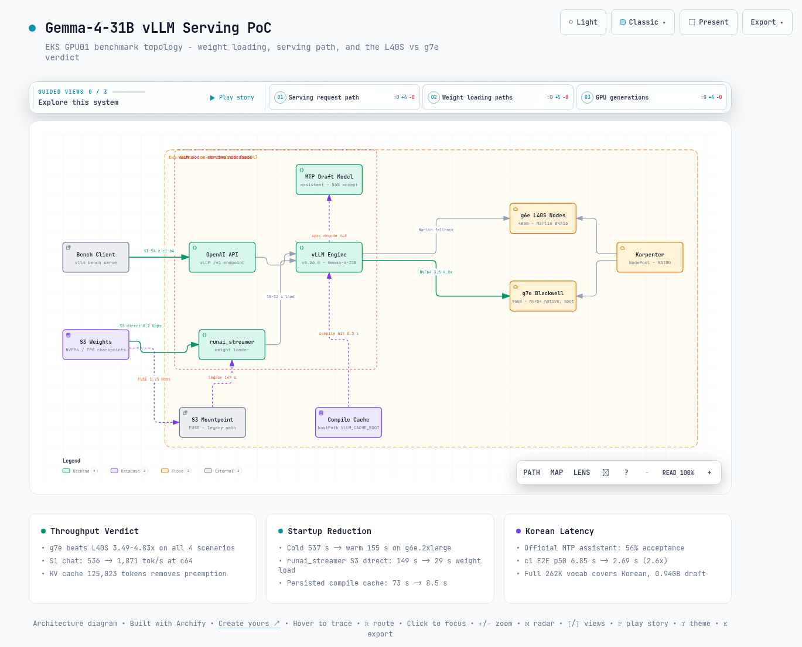

01배경과 판정 기준
이 절은 이번 측정을 왜 했고, 어떤 결과가 나오면 성공으로 볼지 정리합니다. 판정 기준을 먼저 정해 두어야 뒤의 수치를 같은 잣대로 읽을 수 있습니다.
이 PoC의 질문은 하나입니다. Gemma-4-31B를 vLLM으로 서빙할 때 GPU당 처리량이 현행 대비 1.5배 이상 나오는지입니다. vLLM은 대규모 언어 모델을 API 서비스 형태로 돌리는 오픈소스 서빙 엔진입니다.
처리량이 1.5배가 되면 같은 트래픽을 더 적은 서버로 감당할 수 있습니다. 그러면 서빙 레플리카를 12개에서 8개로 줄이는 근거가 됩니다. 판정 대상은 채팅, 요약, 분류, 장문 RAG 네 가지 실사용형 워크로드입니다.
측정은 두 단계로 진행했습니다. 먼저 확보가 쉬운 L40S(g6e) 위에서 기준선을 잡고, 서빙 파이프라인의 병목인 스타트업, 양자화 포맷, 한국어 지연을 정리했습니다. 양자화는 모델 가중치를 낮은 정밀도 숫자로 줄여 메모리와 연산을 아끼는 기법입니다.
그다음 FP4 텐서코어를 네이티브로 갖춘 g7e(RTX PRO 6000 Blackwell)를 Spot으로 확보해 본판정을 냈습니다. Spot은 클라우드의 남는 용량을 할인가에 빌리는 방식입니다.
지표는 네 가지를 봅니다. 처리량은 output tok/s(초당 생성 토큰 수)와 req/s(초당 처리 요청 수)로 잽니다. 지연은 TTFT(첫 토큰이 나올 때까지 걸리는 시간)와 ITL(토큰과 토큰 사이 간격)로 잽니다.
판정식의 분모인 당근 현행 GPU당 처리량 수치는 아직 입력되지 않았습니다. 따라서 이 문서의 배율은 L40S 기준선 대비 g7e의 상대 배율이며, 현행 대비 최종 배율은 그 값이 확보되면 확정됩니다.
02실험 환경과 방법
이 절은 실험을 돌린 장비와 측정 방법을 설명합니다. 뒤에 나오는 모든 수치는 여기서 정한 조건 위에서 읽어야 합니다.
서울 리전 EKS 클러스터(GPU01)의 serving 네임스페이스에 vLLM v0.26.0을 배포했습니다. EKS는 AWS의 관리형 Kubernetes 서비스이고, GPU 노드 확보는 자동 프로비저너인 Karpenter가 맡습니다. 모델 가중치는 S3 버킷에서 runai_streamer로 직접 적재했는데, 이는 가중치 파일을 S3에서 GPU로 병렬 스트리밍하는 vLLM 로더입니다.
인스턴스는 세 가지 세대를 용도에 맞게 나눠 썼습니다. 표 1에서는 각 인스턴스의 GPU 사양과 어떤 실험에 썼는지를 봅니다.
| 인스턴스 | GPU | 메모리와 NIC | 용도 |
|---|---|---|---|
| g6e.2xlarge | 1x L40S 48GB (SM89, Ada) | GDDR6 / 20Gbps 버스트 | L40S 기준선, 스타트업 A/B |
| g6e.12xlarge | 4x L40S 48GB | GDDR6 / 100Gbps, NVMe RAID0 | FP8과 NVFP4 동시 비교, 스케일업 |
| g7e.2xlarge | 1x RTX PRO 6000 Blackwell 96GB | GDDR7 1.6TB/s / 50Gbps | FP4 네이티브 본판정 |
2.1 워크로드 정의
네 시나리오는 입력 길이와 출력 길이로 실사용 패턴을 모사합니다. 각 시나리오를 동시성 1, 2, 4, 8, 16, 32, 64로 바꿔 가며 재서 시나리오당 7조합, 전체 28조합을 vllm bench serve로 측정했습니다. 프리필은 입력 프롬프트를 한꺼번에 읽어 들이는 첫 단계를 가리킵니다.
표 2에서는 각 시나리오의 입력/출력 토큰 길이와 그것이 흉내 내는 실제 작업을 봅니다.
| 시나리오 | 입력 / 출력 토큰 | 모사 워크로드 |
|---|---|---|
| S1_chat | 256 / 128 | CS와 짧은 채팅 |
| S2_summary | 1,024 / 256 | 게시글 요약과 생성 |
| S3_moderation | 512 / 16 | 분류와 모더레이션, 프리필 중심 |
| S4_rag | 4,096 / 256 | 장문 RAG |
NVFP4는 4비트, FP8은 8비트 부동소수점 양자화 포맷입니다. 같은 NVFP4 가중치라도 GPU 세대에 따라 실행 커널이 다릅니다. L40S(SM89)는 FP4 텐서코어가 없어 NVFP4가 Marlin W4A16 커널로 자동 폴백(대체 실행)되고, g7e(Blackwell)는 FlashInferCutlassNvFp4 네이티브로 돕니다. FP8 W8A8은 L40S에서도 Ada FP8 텐서코어로 네이티브 실행이며 폴백이 아닙니다.
03L40S 기준선 28조합
이 절은 기존 세대 GPU인 L40S에서 잰 출발점 수치를 다룹니다. 뒤에서 g7e가 얼마나 빨라졌는지 계산할 때 이 값이 분모가 됩니다.
측정 조건은 nvidia/Gemma-4-31B-IT-NVFP4, 8K 컨텍스트, KV 캐시 31,344 tokens, speculative decoding 끔입니다. KV 캐시는 앞서 처리한 문맥의 중간 계산을 담아 두는 GPU 메모리 영역이고, 이 용량이 동시 처리 한도를 정합니다. speculative decoding은 작은 모델이 미리 추측한 토큰을 본 모델이 한 번에 검증하는 가속 기법인데, 이 라운드에서는 껐습니다.
첫 질문은 각 시나리오가 최대 몇 tok/s까지 나오는가입니다. 표 3에서는 시나리오별 최대 처리량과 그 최대가 나온 동시성 지점을 봅니다.
| 시나리오 | 최대 output tok/s | req/s | 최대 지점 동시성 |
|---|---|---|---|
| S1_chat | 536.0 | 4.19 | 64 |
| S2_summary | 226.0 | 0.88 | 32 |
| S3_moderation | 81.7 | 5.11 | 8 |
| S4_rag | 98.6 | 0.39 | 32 |
S1 채팅의 동시성 곡선을 펼치면 포화 구조가 드러납니다. 처리량은 동시성 64까지 계속 오릅니다. 그러나 첫 토큰 지연(TTFT)은 동시성 32를 넘어서며 급격히 나빠집니다.
짧은 입력과 출력이라 KV 압박이 가장 덜한 시나리오인데도 그렇습니다. 표 4에서는 동시성을 올릴 때 처리량과 지연이 어느 지점에서 갈라지는지를 봅니다.
| 동시성 | req/s | output tok/s | TTFT p50 (ms) | ITL p50 (ms) |
|---|---|---|---|---|
| 1 | 0.17 | 21.6 | 110.6 | 45.2 |
| 2 | 0.33 | 42.6 | 102.9 | 46.5 |
| 4 | 0.64 | 82.0 | 143.6 | 47.1 |
| 8 | 1.22 | 155.8 | 169.6 | 48.1 |
| 16 | 2.22 | 284.2 | 296.6 | 49.7 |
| 32 | 3.17 | 405.7 | 1,860.3 | 56.1 |
| 64 | 4.19 | 536.0 | 2,677.4 | 66.6 |
이 표의 값은 L40S에서 NVFP4가 Marlin W4A16으로 폴백 실행된 결과입니다. FP4 네이티브인 g7e 판정과 직접 비교하면 안 됩니다. 6절의 배율 계산에서 분모로만 씁니다. 또한 이 라운드는 수집 스크립트 버그로 GPU 사용률 컬럼이 기록되지 않았습니다.
04스타트업 단축 A/B
이 절은 서버가 켜져서 요청을 받기까지 걸리는 시간, 즉 스타트업을 어디까지 줄일 수 있는지 다룹니다. 새 GPU 노드가 뜰 때마다 반복되는 비용이라 운영에서 체감이 큰 항목입니다.
먼저 콜드 스타트(캐시가 전혀 없는 첫 기동) 537초(8분 57초)를 단계별로 분해했습니다. 가중치 로드 149초, torch.compile 73초, 신규 노드 확보 48초, 이미지 pull 82초입니다. torch.compile은 모델 실행 코드를 첫 기동 때 최적화 컴파일하는 단계입니다.
구성을 바꿔가며 이 병목을 어디까지 줄일 수 있는지 측정했습니다. 측정 구간은 pod 생성부터 /health 200 도달까지이고, 구간 분해는 vLLM 기동 로그 기준입니다(vLLM v0.26.0, 2026-08-05~06 수동 계측).
비교 기준선은 당근 현행 경로입니다. HuggingFace → S3 sync → S3 Mountpoint 위에서 runai_streamer(concurrency 32, memory_limit 8GiB)로 로드하는 구성입니다. Mountpoint는 S3 버킷을 파일시스템처럼 마운트해 주는 FUSE 도구입니다.
이 경로의 기동 시간은 이미 16분에서 5분까지 개선된 상태였습니다. 이번 실측은 같은 경로의 병목을 구간별로 확인하고 구성만 바꿔 재측정한 것입니다.
4.1 구성별 A/B - g6e.2xlarge
어떤 구성이 몇 초를 아끼는지가 질문입니다. 표 5에서는 구성별 총 기동 시간과, 그중 가중치 로드와 torch.compile이 차지하는 몫을 봅니다.
| 구성 | 총 기동 | 가중치 로드 | torch.compile |
|---|---|---|---|
| 콜드 기준 (Mountpoint, 캐시 없음) | 537초 | 149초 | 73초 |
| 콜드 + hostPath 캐시 볼륨 (적재 회차) | 475초 | 148초 | 63초 |
| 웜 + compile 캐시 히트 | 285초 | 149초 | 8.4초 |
| 웜 + runai_streamer S3 직결 | 238초 | 32초 | 64초 |
| 웜 + runai + 캐시 히트 (최적) | 155초 | 29초 | 8.5초 |
가장 큰 효과는 가중치 로드 경로 교체에서 나왔습니다. Mountpoint FUSE는 149초(실효 1.75Gbps)가 걸렸습니다. 반면 runai_streamer S3 직결은 29초에서 32초(실효 8.2Gbps, concurrency 64, memory_limit 24GiB)로 약 5배 빠릅니다.
compile 캐시를 노드에 영속화하면 재기동 시 컴파일이 73초에서 8.5초로 줄어 55초를 공짜로 회수합니다. 엔진 초기화도 93초에서 25초로 줄어듭니다.
sleep 모드는 놀고 있는 서버의 GPU 메모리를 잠시 반납해 두는 vLLM 기능입니다. 유휴 시 /sleep으로 26.8초 만에 GPU 메모리 45.4GB에서 14.7GB로 30GB를 반납하고, 수요가 오면 /wake_up으로 3.6초에 복귀했습니다. 155초 풀 재기동 대비 약 40배 빠른 복귀라, 자동 GPU 할당의 구조적 대안이 됩니다.
4.2 인스턴스 / 스토리지 축 - 12xlarge NVMe와 g7e
같은 runai_streamer 직결이라도 인스턴스와 스토리지에 따라 로드 시간이 더 내려갑니다. 가중치 로드만 보면 Mountpoint 149초 → 2xlarge 직결 29~32초 → 12xlarge 19초 → g7e 18초의 계열입니다. NVMe는 노드에 직접 붙은 고속 로컬 SSD를 말합니다.
- g6e.12xlarge (100Gbps, NVMe RAID0) - 가중치 로드 19초. FP8과 NVFP4 두 모델(합계 66GB)을 같은 노드에서 동시에 로드하는 중에도 이 값이었고, Mountpoint 대비 7.8배입니다. 콜드 스타트(신규 노드 확보 + 이미지 pull + 로딩)는 2모델 동시 기준 380초였습니다. Karpenter NodePool에 instanceStorePolicy: RAID0 한 줄만 넣으면 인스턴스 스토어 3.8TB가 자동 구성됩니다. runai는 concurrency 128 / memory_limit 64GiB를 사용했습니다.
- g7e.2xlarge (Spot) - 6절 본판정 환경에서 가중치 로드 18초였습니다. 로딩 구간 분해는 g6e 계열에서만 수행했으므로 g7e는 가중치 로드 단일 값입니다.
4.3 한계
- 콜드 스타트는 재현 비용이 커서 반복 측정하지 못했습니다. 신규 노드에는 compile 캐시가 없으므로, 최적 구성의 콜드 기동 약 4.5분은 추정치입니다.
- concurrency 값이 인스턴스와 함께 바뀌어(32 → 64 → 128) 단독 효과를 분리하지 못했습니다.
- NVMe 프리스테이징 후 로컬 로드, fastsafetensors + GDS, FSx for Lustre, EBS 스냅샷 FSR, S3 Express One Zone은 미측정 대안으로 남아 있습니다.
05후속 실험: FP8, 스케일업, 한국어 draft
이 절은 기준선 이후에 남은 세 가지 질문을 실험으로 확인합니다. 양자화 포맷은 무엇이 나은지, 더 큰 인스턴스가 얼마나 이득인지, 한국어 응답을 빠르게 할 초안(draft) 모델은 무엇인지입니다.
5.1 FP8-dynamic 대 NVFP4
g6e.12xlarge 한 노드에 FP8 pod와 NVFP4 pod를 GPU 격리로 동시에 올려 같은 조건에서 비교했습니다. 결론은 워크로드에 따라 갈립니다. 초저지연 채팅은 NVFP4가, 요약과 RAG 같은 고동시성 종합 워크로드는 FP8에 fp8 KV를 켠 구성이 앞섭니다.
fp8 KV는 KV 캐시 자체도 8비트로 저장해 같은 메모리에 더 긴 문맥을 담는 옵션입니다. 표 6에서는 시나리오와 동시성 조합별로 어느 포맷이 이겼는지를 봅니다.
| 시나리오 / 동시성 | FP8 (BF16 KV) | FP8 (fp8 KV) | NVFP4 (Marlin) | 승자 |
|---|---|---|---|---|
| S1_chat / 8 | 129.8 | - | 146.4 | NVFP4 |
| S1_chat / 32 | 321.5 | - | 411.1 | NVFP4 |
| S2_summary / 32 | 112.1 | 201.8 | 195.8 | FP8 + fp8 KV |
| S3_moderation / 8, 32 | 70.4 / 95.9 | - | 57.3 / 75.8 | FP8 |
| S4_rag / 32 | 52.2 | 104.5 | 92.4 | FP8 + fp8 KV |
FP8-dynamic 체크포인트는 kv_cache_scheme이 None이라 기본 KV가 BF16으로 잡힙니다. 그래서 고동시성에서 KV 부족으로 실력을 못 냅니다. --kv-cache-dtype fp8을 붙이면 KV 용량이 12,150에서 23,320 tokens로 늘어 S2와 S4에서 NVFP4를 역전합니다. 이 플래그를 빠뜨린 채 FP8이 느리다고 판단하는 것이 가장 흔한 실수입니다.
5.2 g6e.12xlarge 스케일업
더 큰 인스턴스는 로딩을 얼마나 앞당길까가 질문입니다. 100Gbps NIC과 NVMe RAID0를 갖춘 12xlarge에서는 runai_streamer 가중치 로드가 두 모델(66GB)을 동시에 올리는 중에도 19초로 끝났습니다. Mountpoint 149초 대비 7.8배입니다.
설정도 간단합니다. instanceStorePolicy: RAID0 한 줄로 NVMe 3.8TB가 kubelet ephemeral-storage로 자동 구성됩니다.
5.3 한국어 speculative decoding
speculative decoding에서는 작은 draft 모델이 토큰을 미리 추측하고 본 모델이 한 번에 검증합니다. 추측이 검증을 통과하는 비율이 수용률이고, 수용률이 높을수록 응답이 빨라집니다. 당근형 한국어 프롬프트 200개로 draft 모델별 수용률을 측정했습니다.
공식 MTP speculator인 google/gemma-4-31B-it-assistant가 수용률 56%로, 축소 어휘(32K vocab) EAGLE3의 5.6% 대비 10배 높았습니다. MTP는 본 모델에 붙여 여러 토큰을 한 번에 예측하게 하는 공식 초안 모듈입니다. 전체 262K vocab을 그대로 쓰기 때문에 한국어를 커버합니다.
표 7에서는 구성별 수용률과 함께 동시성 1(c1)과 8(c8)에서의 속도 변화를 봅니다. E2E p50은 요청 시작부터 응답 완료까지 걸린 시간의 중앙값입니다.
| 구성 | 수용률 | c1 tok/s | c1 E2E p50 | c8 tok/s |
|---|---|---|---|---|
| baseline (spec off) | - | 18.4 | 6.85초 | 122.9 |
| ngram (k=4) | 25.8~27.5% | 20.1 | 6.70초 | 131.4 |
| MTP assistant (k=4) | 54.7~56.0% | 48.5 | 2.69초 | 281.5 |
MTP assistant는 c1 종단 지연을 6.85초에서 2.69초로 2.6배, c8 처리량을 122.9에서 281.5 tok/s로 2.3배 개선합니다. 모델 크기도 0.94GB로 EAGLE3(4.5GB)의 5분의 1입니다. 한국어 draft는 별도 학습 없이 공식 MTP assistant 채택이 정답이라는 결론입니다.
06g7e 본판정
이 절이 이 문서의 본판정입니다. FP4 연산을 하드웨어로 직접 실행하는 신형 g7e에서 같은 벤치마크를 다시 돌려 L40S 기준선과 비교합니다.
Spot으로 확보한 g7e.2xlarge에서 NVFP4를 네이티브 커널로 돌렸습니다. KV 캐시가 125,023 tokens까지 잡히고 가중치 로드는 18초입니다. 동일 워크로드, 동일 8K 컨텍스트로 L40S 기준선과 비교한 결과 전 시나리오에서 3.49배에서 4.83배 높았습니다.
표 8에서는 시나리오별 최대 처리량의 배율과, 시간당 가격까지 반영한 비용 효율 배율을 봅니다.
| 시나리오 | L40S 최대 | g7e 최대 | 처리량 배율 | 비용효율 배율 |
|---|---|---|---|---|
| S1_chat | 536 tok/s | 1,871 tok/s (14.6 req/s) | 3.49x | 6.4x |
| S2_summary | 226 tok/s | 910 tok/s (3.6 req/s) | 4.03x | 7.4x |
| S3_moderation | 81.7 tok/s | 395 tok/s (24.7 req/s) | 4.83x | 8.9x |
| S4_rag | 98.6 tok/s | 402 tok/s (1.6 req/s) | 4.08x | 7.5x |
핵심: g7e의 우위는 고동시성에서 커집니다. preemption은 KV 캐시가 모자랄 때 진행 중인 요청을 중단했다가 다시 계산하는 동작입니다. 96GB GDDR7이 KV를 125,023 tokens까지 확보해 L40S가 포화하던 구간의 preemption을 없애기 때문입니다.
- 디코드 지연 ITL p50이 전 시나리오 동시성 1 기준 45ms에서 25ms로 반토막입니다. GDDR7 1.6TB/s 대역폭과 FP4 네이티브 커널의 효과입니다.
- 분류(S3)는 4.83배로 격차가 가장 큽니다. L40S에서 KV 부족으로 요동치던 동시성 16에서 32 구간이 g7e에서 24.7 req/s로 완전히 해소됐습니다.
- 낮은 동시성의 레이턴시 구간에서도 전 조합 최소 1.8배로 일관된 우위를 보입니다.
비용효율 배율은 최대 tok/s를 시간당 단가로 나눈 값의 비율입니다. g7e는 Spot $1.50/hr, L40S는 온디맨드 $2.76/hr을 적용했습니다. g7e 온디맨드는 $4.13/hr이므로 Spot 확보 여부가 비용 효율의 큰 변수입니다.
07권장 프로덕션 구성
이 절은 앞 실험들의 결론을 지금 바로 적용할 수 있는 하나의 실행 명령으로 합칩니다. 각 옵션이 어느 실험에서 왔는지는 4절과 5절에서 확인할 수 있습니다.
L40S 환경 기준으로 후속 실험 결과를 합치면 다음 구성이 종합 성능과 한국어 지연을 동시에 잡습니다. FP8-dynamic 체크포인트에 fp8 KV와 MTP assistant를 얹습니다. 기동은 runai_streamer와 compile 캐시로 단축합니다.
vllm serve <FP8-dynamic 체크포인트> \
--load-format runai_streamer \
--model-loader-extra-config '{"concurrency":64,"memory_limit":25769803776}' \
--kv-cache-dtype fp8 \
--speculative-config '{"method":"mtp","model":"<gemma-4-31B-it-assistant>","num_speculative_tokens":4}' \
--tool-call-parser gemma4 --reasoning-parser gemma4 --enable-auto-tool-choice
# 추가: VLLM_CACHE_ROOT 영속화(compile 캐시), Pod Identity(S3 read)이 조합에서 무엇을 기대할 수 있을까요. 예상 효과는 웜 기동 2분에서 3분, 한국어 응답 지연 2.5배 단축, 프리필 처리량 약 1.25배입니다. g7e를 확보하면 같은 구성을 NVFP4 네이티브로 재판정해 6절의 배율을 다시 검증합니다.
08결론과 남은 과제
마지막으로 전체 결과를 판정 기준에 대입하고, 아직 확인하지 못한 항목을 정리합니다. 한 문장으로 요약하면, g7e로 옮기는 것만으로 처리량 3.5배 이상과 비용 효율 6배 이상을 얻고 기동 시간과 한국어 지연 문제도 함께 풀린다는 것입니다.
처리량 관점에서 g7e는 L40S 대비 3.5배에서 4.8배, 비용 효율은 6배에서 9배입니다. PoC 판정 기준인 1.5배를 크게 상회합니다.
따라서 당근 현행 GPU가 L40S급 이하라면 레플리카 12개에서 8개를 넘어 4개 수준까지 검토할 여지가 있습니다. 스타트업과 한국어 지연도 각각 실용 범위로 들어왔습니다. 표 9에서는 운영 상황별로 어떤 구성을 고르면 되는지를 봅니다.
| 운영 상황 | 권장 |
|---|---|
| 초저지연 채팅 위주 | NVFP4, 디코드 ITL이 가장 낮음 |
| 요약과 RAG 등 종합 워크로드 | FP8 + fp8 KV |
| 한국어 지연이 중요 | MTP assistant speculator (수용률 56%) |
| 기동 시간 단축 | runai_streamer S3 직결 + compile 캐시 영속화 |
| 최대 처리량과 비용 효율 | g7e Spot, NVFP4 네이티브 |
남은 과제는 세 가지입니다.
- 첫째, 판정식을 닫으려면 당근 현행 GPU당 처리량 수치가 필요합니다.
- 둘째, MTP와 fp8 KV, 고동시성의 상호작용 스윕(num_speculative_tokens 4 대 8)이 미완입니다.
- 셋째, 70B급을 대비한 TP=2/4(PCIe) 실측이 남아 있습니다. TP는 한 모델을 여러 GPU에 나눠 싣는 텐서 병렬화입니다.

--참고 자료
실측 원본
- GPU01 벤치마크 결과 아카이브 (28조합 + g7e 28조합, ENV 포함) - 자체 실측 (2026-08-05 ~ 2026-08-06) results/SUMMARY.md, results/STARTUP.md, results/FOLLOWUP.md, results/G7E-JUDGMENT.md
공식 문서
- vLLM Documentation https://docs.vllm.ai/en/latest/
- vLLM - Run:ai Model Streamer로 모델 로딩 https://docs.vllm.ai/en/latest/models/extensions/runai_model_streamer.html
- vLLM - Speculative Decoding https://docs.vllm.ai/en/latest/features/spec_decode.html
- google/gemma-4-31B-it-assistant (MTP speculator) https://huggingface.co/google/gemma-4-31B-it-assistant